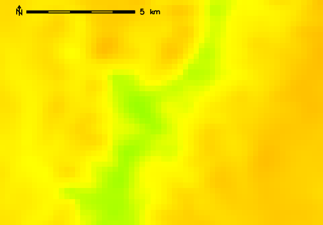
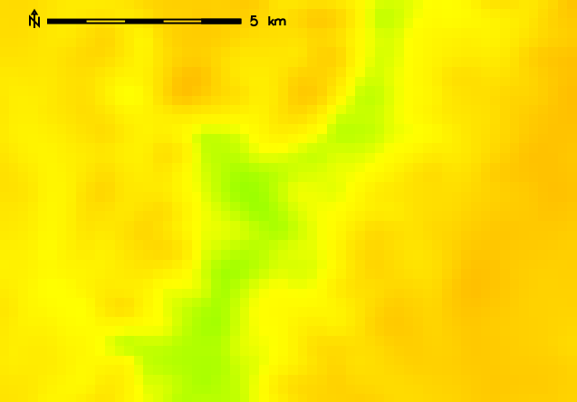

Original 500m resolution elevation map

Resampled (bilinear) 250m resolution elevation map
This module is intended for reinterpolation of continuous data to a different resolution rather than for interpolation from scattered data (use the v.surf.* modules for that purpose).
Resampling modules (r.resample, r.resamp.stats, r.resamp.interp, r.resamp.rst) resample the map to match the current region settings.
Note that for bilinear, bicubic and lanczos interpolation, cells of the output raster that cannot be bounded by the appropriate number of input cell centers are set to NULL (NULL propagation). This could occur due to the input cells being outside the current region, being NULL or MASKed.
For longitude-latitude locations, the interpolation algorithm is based on degree fractions, not on the absolute distances between cell centers. Any attempt to implement the latter would violate the integrity of the interpolation method.
g.region raster=elev_state_500m -p
g.region res=250 -ap
r.resamp.interp input=elev_state_500m output=elev_state_250m \
method=bilinear

Resampled (bilinear) 250m resolution elevation map
Overview: Interpolation and Resampling in GRASS GIS